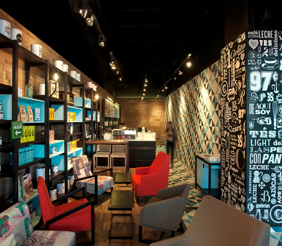

Cielito Querido Café, México
Taking inspiration from early 1900s latin, hand-carved letterpress signs and vintage food labels, Mexican studio Esrawe created a fresh interior for Cielito Querido Café. The bold pink and blue typography combine with the natural materials give the café a unique feel.